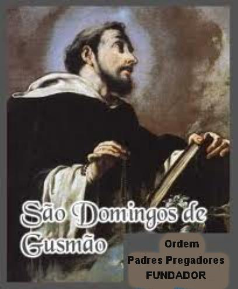

PREFÁCIO

A Ordem dos Padres Pregadores, fundada por São Domingos, deu uma contribuição excepcional e fundamental para a renovação da Igreja. Ela se evidencia de modo inconfundível, a medida que se avança no conhecimento das práticas e dos ensinamentos do fundador.
O seu sucessor, Beato Padre Jordão da Saxônia, na orientação da Ordem dos Pregadores, também denominada Ordem Dominicana, oferece um retrato maiúsculo do fundador, no texto de uma oração que ficou famosa:
“Inflamado de zelo por DEUS e de ardor sobrenatural, pela tua caridade sem confins e o fervor do espírito veemente, ele se consagrou inteiramente com o voto da pobreza perpétua à observância apostólica e à pregação evangélica”.
Domingos sempre falava com DEUS e de DEUS.
Este grande Santo nos recorda que no coração da Igreja deve arder sempre um fogo missionário, que impele incessantemente o anúncio do Evangelho, onde for necessário. JESUS CRISTO é o bem mais precioso que os homens e as mulheres de todos os tempos e lugares têm o direito de conhecer e amar!
Domingos faleceu com 51 anos de idade, em Bolonha, na Itália, a cidade que o declarou padroeiro. Sua Ordem dos Padres Pregadores, com o apóio da Santa Sé, difundiu-se em muitos países da Europa.
Com sua santidade, ele mesmo nos indica dois meios indispensáveis, a fim de que a ação apostólica seja incisiva e apresente frutos inquestionáveis. Em primeiro lugar, a Devoção Mariana, que ele cultivou com ternura e fervor, deixando-a como herança preciosa aos seus filhos espirituais que difundiram a Recitação do Rosário. Em segundo lugar, Domingos assumiu um cuidado todo especial com as orações de intercessão, rezadas nos Mosteiros, nos Conventos e nas Igrejas, pelas Irmãs claustrais, pelos Padres e pelos leigos. Ele dizia: “só no Paraíso Divino compreenderemos quão eficazes elas são em benefício da obra apostólica e dos necessitados”
O APOSTOLADO DOS SAGRADOS CORAÇÕES apreciando a alma admirável do Padre São Domingos de Gusmão pesquisou diversos livros que descrevem a sua vida e sua obra, para melhor conhecer os seus ensinamentos, e deixá-los ao alcance de todos. É assim que podemos citar como fonte de consulta e informação, o livro escrito por Frei Adauto Pelisário OP, o livro da Irmã Maria Izabel Coenca, o extenso livro de Simon Tugwell, o texto escrito pelo Papa Bento XVI, assim como os textos do Processo de Canonização, que foram traduzidos por Frei Dorival Teles de Menezes OP, membro da Ordem Dominicana no Brasil. Todos eles retratam de modo claro e precioso, a admirável vida de São Domingos de Gusmão.
APOSTOLADO DOS SAGRADOS CORAÇÕES
http://www.apostoladosagradoscoracoes.com